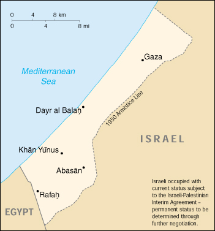

| Gaza Strip |
|
|  | |
| Introduction |
Background: The Israel-PLO Declaration of Principles on Interim Self-Government Arrangements (the DOP), signed in Washington on 13 September 1993, provides for a transitional period not exceeding five years of Palestinian interim self-government in the Gaza Strip and the West Bank. Under the DOP, Israel agreed to transfer certain powers and responsibilities to the Palestinian Authority, which includes a Palestinian Legislative Council elected in January 1996, as part of interim self-governing arrangements in the West Bank and Gaza Strip. A transfer of powers and responsibilities for the Gaza Strip and Jericho took place pursuant to the Israel-PLO 4 May 1994 Cairo Agreement on the Gaza Strip and the Jericho Area and in additional areas of the West Bank pursuant to the Israel-PLO 28 September 1995 Interim Agreement, the Israel-PLO 15 January 1997 Protocol Concerning Redeployment in Hebron, the Israel-PLO 23 October 1998 Wye River Memorandum, and the 4 September 1999 Sharm el-Sheikh Agreement. The DOP provides that Israel will retain responsibility during the transitional period for external security and for internal security and public order of settlements and Israeli citizens. Permanent status is to be determined through direct negotiations, which resumed in September 1999 after a three-year hiatus.
| Geography |
Location: Middle East, bordering the Mediterranean Sea, between Egypt and Israel
Geographic coordinates: 31 25 N, 34 20 E
Map references: Middle East
Area:
total:
360 sq km
land:
360 sq km
water:
0 sq km
Area - comparative: slightly more than twice the size of Washington, DC
Land boundaries:
total:
62 km
border countries:
Egypt 11 km, Israel 51 km
Coastline: 40 km
Maritime claims: Israeli-occupied with current status subject to the Israeli-Palestinian Interim Agreement - permanent status to be determined through further negotiation
Climate: temperate, mild winters, dry and warm to hot summers
Terrain: flat to rolling, sand- and dune-covered coastal plain
Elevation extremes:
lowest point:
Mediterranean Sea 0 m
highest point:
Abu 'Awdah (Joz Abu 'Auda) 105 m
Natural resources: arable land
Land use:
arable land:
24%
permanent crops:
39%
permanent pastures:
0%
forests and woodland:
11%
other:
26% (1993 est.)
Irrigated land: 120 sq km (1993 est.)
Natural hazards: NA
Environment - current issues: desertification; salination of fresh water; sewage treatment
Geography - note: there are 24 Israeli settlements and civilian land use sites in the Gaza Strip (August 1999 est.)
| People |
Population:
1,132,063
note:
in addition, there are some 6,500 Israeli settlers in the Gaza Strip (July 2000 est.)
Age structure:
0-14 years:
50% (male 289,954; female 275,628)
15-64 years:
47% (male 271,365; female 263,197)
65 years and over:
3% (male 13,792; female 18,127) (2000 est.)
Population growth rate: 3.97% (2000 est.)
Birth rate: 43.14 births/1,000 population (2000 est.)
Death rate: 4.31 deaths/1,000 population (2000 est.)
Net migration rate: 0.83 migrant(s)/1,000 population (2000 est.)
Sex ratio:
at birth:
1.05 male(s)/female
under 15 years:
1.05 male(s)/female
15-64 years:
1.03 male(s)/female
65 years and over:
0.76 male(s)/female
total population:
1.03 male(s)/female (2000 est.)
Infant mortality rate: 25.97 deaths/1,000 live births (2000 est.)
Life expectancy at birth:
total population:
70.82 years
male:
69.58 years
female:
72.11 years (2000 est.)
Total fertility rate: 6.55 children born/woman (2000 est.)
Nationality:
noun:
NA
adjective:
NA
Ethnic groups: Palestinian Arab and other 99.4%, Jewish 0.6%
Religions: Muslim (predominantly Sunni) 98.7%, Christian 0.7%, Jewish 0.6%
Languages: Arabic, Hebrew (spoken by Israeli settlers and many Palestinians), English (widely understood)
Literacy:
definition:
NA
total population:
NA%
male:
NA%
female:
NA%
| Government |
Country name:
conventional long form:
none
conventional short form:
Gaza Strip
local long form:
none
local short form:
Qita Ghazzah
Data code: GZ
| Economy |
Economy - overview: Economic conditions in the Gaza Strip - under the responsibility of the Palestinian Authority since the Cairo Agreement of May 1994 - have deteriorated since the early 1990s. Real per capita GDP for the West Bank and Gaza Strip (WBGS) declined 36% between 1992 and 1996 owing to the combined effect of falling aggregate incomes and robust population growth. The downturn in economic activity was largely the result of Israeli closure policies - the imposition of generalized border closures in response to security incidents in Israel - which disrupted previously established labor and commodity market relationships between Israel and the WBGS. The most serious negative social effect of this downturn has been the emergence of chronic unemployment; average unemployment rates in the WBGS during the 1980s were generally under 5%; by the mid-1990s this level had risen to over 20%. Since 1997 Israel's use of comprehensive closures has decreased and, in 1998, Israel implemented new policies to reduce the impact of closures and other security procedures on the movement of Palestinian goods and labor. In October 1999, Israel permitted the opening of a safe passage between the Gaza Strip and the West Bank in accordance with the 1995 Interim Agreement. These changes to the conduct of economic activity have fueled a moderate economic recovery in 1998-99.
GDP: purchasing power parity - $1.17 billion (1999 est.)
GDP - real growth rate: 4.6% (1999 est.)
GDP - per capita: purchasing power parity - $1,060 (1999 est.)
GDP - composition by sector:
agriculture:
33%
industry:
25%
services:
42% (1995 est., includes West Bank)
Population below poverty line: NA%
Household income or consumption by percentage share:
lowest 10%:
NA%
highest 10%:
NA%
Inflation rate (consumer prices): 5% (includes West Bank) (1999 est.)
Labor force: NA
Labor force - by occupation: services 66%, industry 21%, agriculture 13% (1996)
Unemployment rate: 14.5% (includes West Bank) (1998 est.)
Budget:
revenues:
$1.6 billion
expenditures:
$1.73 billion, including capital expenditures of $NA
note:
includes West Bank (1999 est.)
Industries: generally small family businesses that produce textiles, soap, olive-wood carvings, and mother-of-pearl souvenirs; the Israelis have established some small-scale modern industries in an industrial center
Industrial production growth rate: NA%
Electricity - production: 0 kWh (1998)
Electricity - consumption: NA kWh
Electricity - imports: NA kWh; note - electricity supplied by Israel
Agriculture - products: olives, citrus, vegetables; beef, dairy products
Exports: $682 million (includes West Bank) (f.o.b., 1998 est.)
Exports - commodities: citrus, flowers
Exports - partners: Israel, Egypt, West Bank
Imports: $2.5 billion (c.i.f., 1998 est.) (includes West Bank)
Imports - commodities: food, consumer goods, construction materials
Imports - partners: Israel, Egypt, West Bank
Debt - external: $108 million (includes West Bank) (1997 est.)
Economic aid - recipient: $800 million pledged (includes West Bank) (1999)
Currency: 1 new Israeli shekel (NIS) = 100 new agorot
Exchange rates: new Israeli shekels (NIS) per US$1 - 4.2260 (November 1999), 3.8001 (1998), 3.4494 (1997), 3.1917 (1996), 3.0113 (1995)
Fiscal year: calendar year
| Communications |
Telephones - main lines in use: 95,729 (total for Gaza Strip and West Bank) (1997)
Telephones - mobile cellular: NA
Telephone system:
domestic:
rudimentary telephone services provided by an open wire system
international:
NA
Radio broadcast stations: AM 0, FM 0, shortwave 0 (1998)
Radios: NA; note - most Palestinian households have radios (1999)
Television broadcast stations: 2 (operated by the Palestinian Broadcasting Corporation) (1997)
Televisions: NA; note - most Palestinian households have televisions (1997)
Internet Service Providers (ISPs): 3 (1999)
| Transportation |
Railways:
total:
NA km; note - one line, abandoned and in disrepair, little trackage remains
Highways:
total:
NA km
paved:
NA km
unpaved:
NA km
note:
small, poorly developed road network
Ports and harbors: Gaza
Airports:
2 (1999 est.)
note:
includes Gaza International Airport that opened on 24 November 1998 as part of agreements stipulated in the September 1995 Oslo II Accord and the 23 October 1998 Wye River Memorandum
Airports - with paved runways:
total:
1
over 3,047 m:
1 (1999 est.)
Airports - with unpaved runways:
total:
1
under 914 m:
1 (1999 est.)
| Military |
Military branches: NA
Military expenditures - dollar figure: $NA
Military expenditures - percent of GDP: NA%
| Transnational Issues |
Disputes - international: West Bank and Gaza Strip are Israeli-occupied with current status subject to the Israeli-Palestinian Interim Agreement - permanent status to be determined through further negotiation